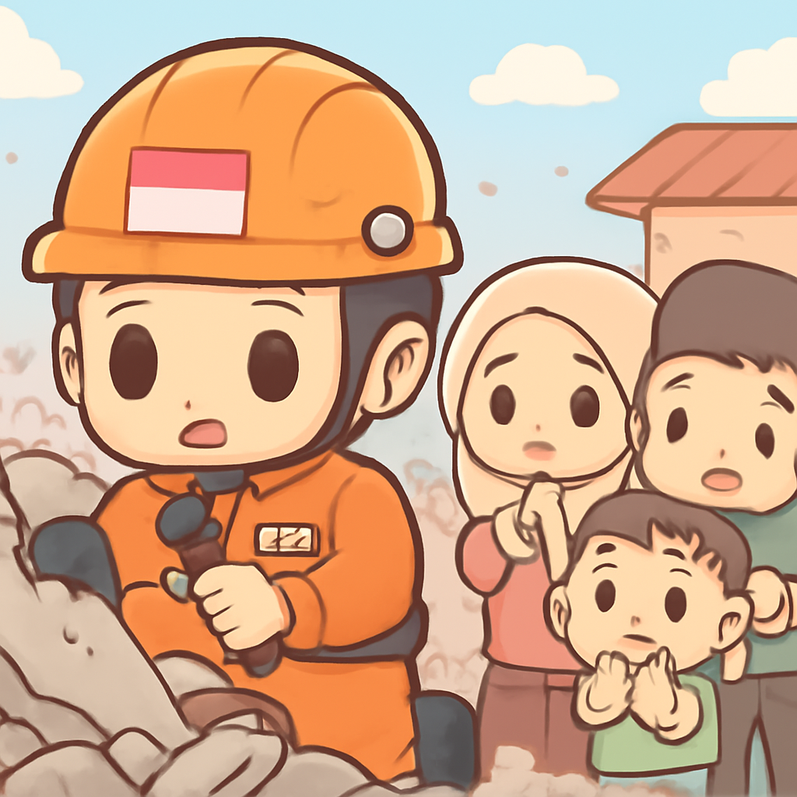

其一 · 印尼 · 強震造成47人遇難
印尼發生7.7級地震，數百棟建築毀壞

在印尼近日發生的7.7級強震中，至少47人喪生，數百棟建築遭到摧毀。當地官員正在進行快速評估，這場地震是數十年來最強的之一，影響深遠。這樣的震動可不是你在遊樂園的過山車能比的！
🔗 原始新聞 ↗
2026-08-16 · 以古觀今，以笑抗愁
印尼發生7.7級地震，數百棟建築毀壞

在印尼近日發生的7.7級強震中，至少47人喪生，數百棟建築遭到摧毀。當地官員正在進行快速評估，這場地震是數十年來最強的之一，影響深遠。這樣的震動可不是你在遊樂園的過山車能比的！
🔗 原始新聞 ↗
以色列空襲南黎巴嫩，造成多名平民喪生
以色列近日對南黎巴嫩發動空襲，造成至少11人死亡，包括兒童。以方表示，此次行動是針對「真主黨恐怖基礎設施」的報復，局勢再度緊張。這可不是家庭聚會上討論的話題，但影響卻相當重大。
🔗 原始新聞 ↗
摩洛哥拘留數十名移民，試圖越過邊界
摩洛哥當局近日加強邊界安全，拘留了數十名企圖通過西班牙的移民。社交媒體上出現的越境消息引發了恐慌，顯示出北非地區移民問題的複雜性。這是個不容易的旅程，就像試圖在高峰時段過馬路一樣！
🔗 原始新聞 ↗
卡塔爾反對伊朗聲稱其拘留飛行員
卡塔爾政府近日否認了伊朗的指控，稱其在兩架戰機被擊落後拘留了三名伊朗飛行員。這一爭議不僅涉及國際關係，也讓人想起「你說的不是我聽的」的情況。情勢緊張，大家都在觀察接下來會發生什麼。
🔗 原始新聞 ↗
夏威夷準備迎接可能的颶風襲擊
夏威夷正在準備應對可能是34年來首次直接襲擊的颶風Lala。專家預測，最壞的情況下可能帶來達25英寸的降雨。看來，夏威夷的海灘可能要暫時關閉了，這可不是衝浪者期待的消息。
🔗 原始新聞 ↗